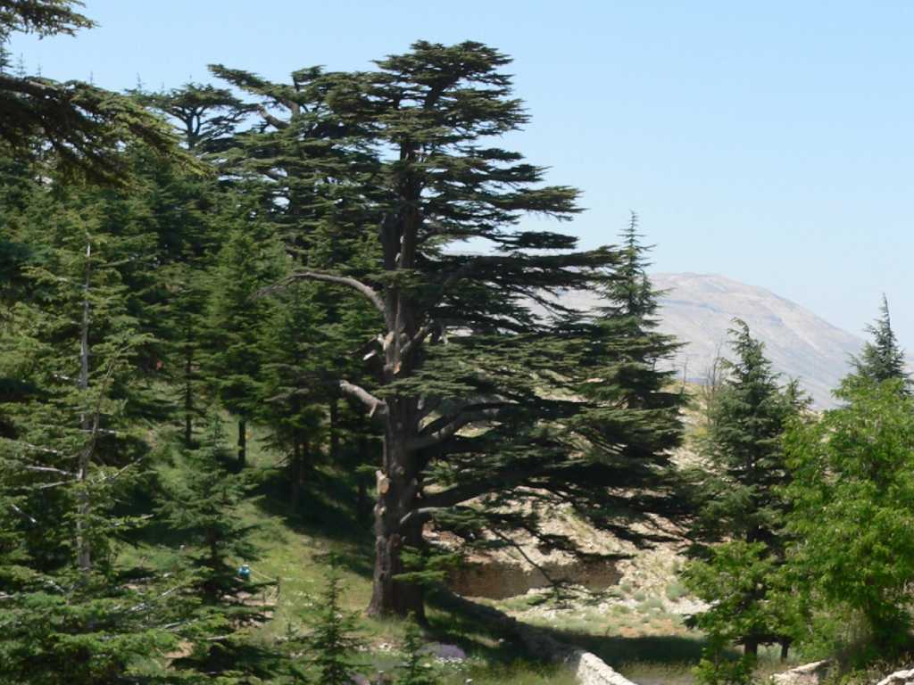

Cedar forest Qadisha valley
レバノン杉はヒマヤラ杉アトラス杉より利用価値が高くフェニキアやエジプトの時代から舟や建築材として大量に利用され既にローマ時代には伐採禁止令が出るほど利用された 木材として防虫防食防水性に富み樹液も防虫剤防食剤だけでなく芳香剤としても用いられた 現在１２００本ほどしか残っておらず日本の技術支援で植林を進めているが生態系を大きく変えずに増やすのは難しく森林を形成するには千年以上かかるものと考えられている